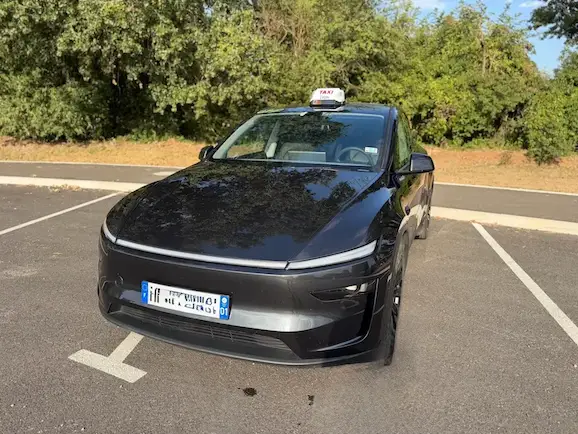
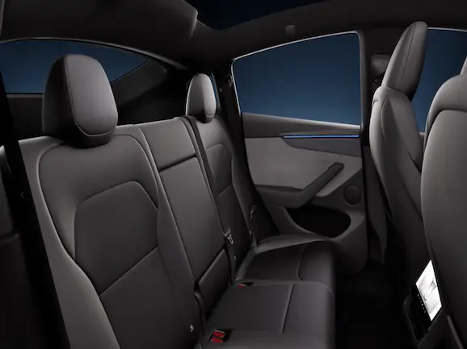

Taxi conventionné CPAM à Châtillon-la-Palud, Ambérieu-en-Bugey et Meximieux
TAXI GRAY vous accompagne pour vos transports médicaux, gares, aéroports et déplacements professionnels depuis Châtillon-la-Palud, Ambérieu-en-Bugey, Meximieux et les communes voisines.
🚉 Gares & aéroports
🏥 Taxi conventionné CPAM
💼 Déplacements professionnels
Pourquoi choisir TAXI GRAY pour vos déplacements ?
Nos services de taxi
Taxi gares
Transport vers les gares d'Ambérieu-en-Bugey, Meximieux et les correspondances régionales.
En savoir plusTaxi conventionné CPAM
Transport médical conventionné CPAM vers les hôpitaux, cliniques et centres de soins dans l'Ain et la métropole lyonnaise.
En savoir plusTaxi entreprises
Déplacements professionnels, rendez-vous d'affaires et trajets toutes distances.
En savoir plusDécouvrez TAXI GRAY


Avis clients
La satisfaction de nos clients est notre priorité
Merci à nos clients pour leur confiance. Découvrez les avis Google de TAXI GRAY.
⭐ Voir les avis Google📍 Zone d'intervention de TAXI GRAY
Basé à Châtillon-la-Palud, TAXI GRAY intervient pour vos déplacements dans la Plaine de l'Ain et les communes voisines : transports médicaux conventionnés CPAM, gares, aéroports et trajets toutes distances.
Questions fréquentes
Comment réserver un taxi ?
Vous pouvez réserver votre taxi par téléphone au 06 12 88 16 34. Nous répondons rapidement à vos demandes dans tout le secteur de l'Ain.
Êtes-vous conventionné CPAM ?
Oui, TAXI GRAY est conventionné CPAM et réalise les transports médicaux sur prescription vers les hôpitaux, cliniques, centres de soins et établissements médicaux.
Assurez-vous les transferts vers les aéroports ?
Oui, nous effectuons les transferts vers Lyon-Saint-Exupéry, Genève ainsi que les principales gares de la région Auvergne-Rhône-Alpes.
Dans quelles communes intervenez-vous ?
Nous intervenons notamment à Châtillon-la-Palud, Ambérieu-en-Bugey, Meximieux, Priay, Pont-d'Ain, Saint-Vulbas, Loyettes et dans toute la Plaine de l'Ain.
Quels hôpitaux et centres de soins desservez-vous ?
TAXI GRAY assure les transports conventionnés CPAM vers les hôpitaux, cliniques, centres de soins et établissements médicaux de l'Ain ainsi que vers la métropole lyonnaise.
Combien de passagers peuvent voyager ?
Lors de votre réservation, indiquez le nombre de passagers ainsi que vos besoins spécifiques afin de préparer votre trajet dans les meilleures conditions.
Peut-on réserver un taxi à l'avance ?
Oui, vous pouvez anticiper votre trajet en contactant TAXI GRAY par téléphone. Nous organisons vos déplacements médicaux, professionnels, gares et aéroports.
Intervenez-vous uniquement à Châtillon-la-Palud ?
Non, TAXI GRAY intervient dans toute la Plaine de l'Ain, notamment à Ambérieu-en-Bugey, Meximieux, Priay, Pont-d'Ain, Saint-Vulbas, Loyettes et les communes voisines.
🚕 Réserver votre taxi
Besoin d'un taxi pour un transport médical, une gare, un aéroport, un déplacement professionnel ou un trajet toutes distances ? Remplissez votre demande de réservation. TAXI GRAY vous répond rapidement pour confirmer votre trajet.